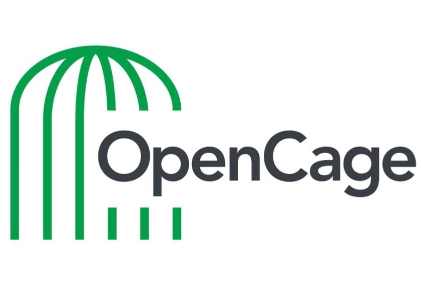
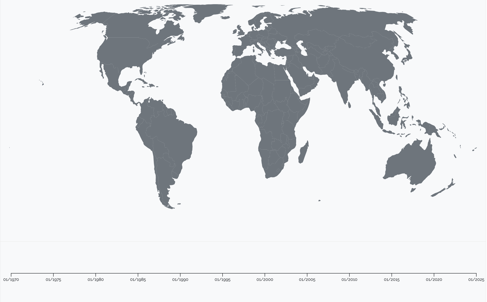
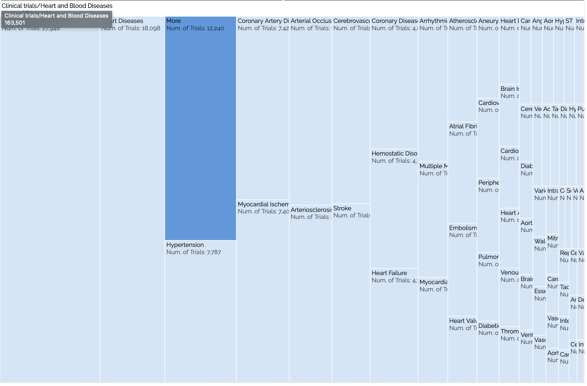

ClinicalTrials.gov is a extensive database with many dimensions of data and a wide range of users. Interviews with stakeholders, meetings with our supervisor, and thorough explorations of the website taught us how to set an appropriate scope for our project. Navigating the ClinicalTrials.gov’s data structures and API taught us valuable lessons in how to organize and transform large amounts of (often textual) data. The amount and variety of data also forced us to consider several methods for mapping the data to meaningful visual structures.
Practical knowledge
Front-end development consisted of designing, implementing and testing visualizations as well as the structure of and interactions with the web page. On top of that, graphic design involved curating the layout of the different sections in the page, from the search results to the filters, from the time graph to the navigation bar. On the other hand, back-end development consisted of managing the status of the application, searching clinical trials according to the input of the user, and notifying the different section controllers of the updated results. Two different third-party APIs where employed, among which the one provided by ClinicalTrials.gov.
Technlogies and frameworks used
Front-end
Graphic design
Back-end

Background
ClinicalTrials.gov is the world’s largest public clinical research registry and results database, providing free access to information on medical studies with human volunteers in over 200 countries. It supports a large network of stakeholders who contribute to, and rely on, clinical research.
RETRIALS is a project aimed at improving healthcare professionals’ interaction with this vast database by providing interactive and meaningful visual representations of the most relevant data.
Who are our users?
Healthcare professionals searching for clinical trials for their patients, gathering information about a specific type of disease or intervention, or exploring the database to make informed decisions about their future research opportunities.
What are their needs?
Filtering results based on disease, intervention, recruitment status, and location; assessing the success rate and distribution of specific interventions; comparing the number of trials associated with a specific disease or a category of diseases.
How does RETRIALS help them?
World map + time graph
Augments database search by mapping results to geographical positions as well as a time graph. The search field supports detailed filtering of the data, and the visual attributes gives the user an overview over the amount, location, and start date of studies that match their search criteria. Using this view, our users can quickly identify studies based on the type of disease, study, and intervention, as well as status and location. Other interactions like highlighting, zooming, and selecting provide further detail and link results across modules.


Treemap
Categorizes all studies according to the hierarchical relationship between diseases and displays it as a set of nested rectangles with areas proportional to the number of studies associated with the name of each rectangle. Treemaps make efficient use of space and enables effortless visual comparison of large datasets, which makes them useful when trying to find well-financed or underdeveloped research areas or just exploring the database. Interactive navigation eases the user’s visual processing by presenting a sensible number of rectangles at each level and hovering provides details as tooltips. Clicking on a dark rectangle expands its contents whereas clicking on a light one automatically prepares a search for that specific disease.